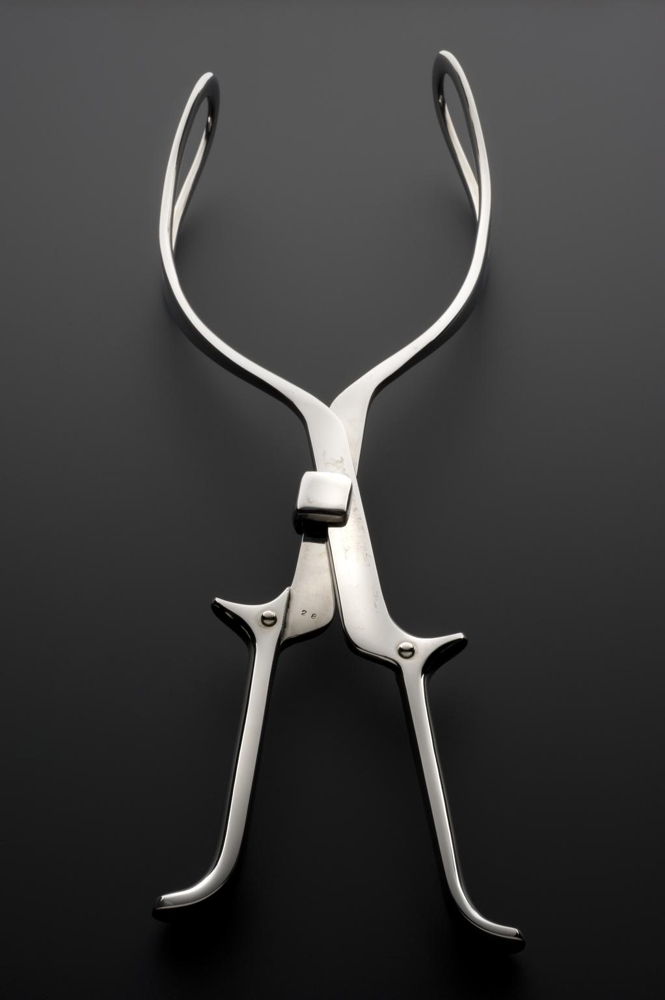
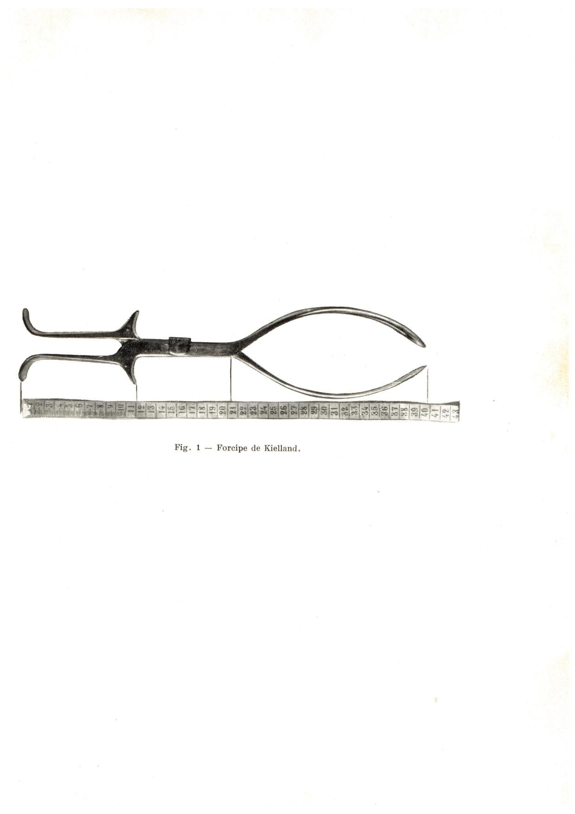
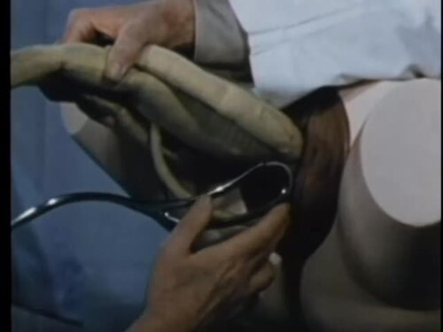

Página 2 · Qual instrumento?
Os três fórceps de prova: Simpson, Kielland e Piper
Três instrumentos numa bandeja. À primeira olhada, parentes: hastes, colheres, articulação. Mas um serve para terminar de desprender uma cabeça já baixa, outro para girar noventa graus uma cabeça atravessada, e o terceiro para resgatar uma cabeça presa depois que o corpo do bebê já nasceu. Errar qual é qual, na prova, custa a questão — e, na sala de parto, custa mais.
Simpson — o mais simples
Simpson é o mais simples — e essa é a âncora de memória: simples → Simpson. É pequeno. Serve para pequenas rotações e para o desprendimento com a cabeça já baixa. O limite dele é numérico e cobrável: roda no máximo 45 graus. Acima disso, não é o instrumento.
Daí a primeira pegadinha: o Simpson não serve na variedade transversa — a cabeça "olhando para o lado" —, porque a transversa exige grande rotação. Ele parece um "faz-tudo" pela simplicidade, e essa aparência é justamente a armadilha. Rodar mais de 45 graus com o Simpson exigiria a dupla pegada (aplica, roda, retira, reaplica) — a chamada dupla pega de Scanzoni, que gira até 135°. É técnica pouco usada na rotina hoje, reservada a quando não se dispõe do Kielland e há operador com destreza; não a trate como resposta de rotina (o fato cobrável é apenas: >45° com Simpson exigiria dupla pegada).
Kielland — o das grandes rotações
O melhor fórceps para grande rotação é o Kielland. Três marcas o definem:
- Articulação móvel — o "quadradinho" que permite as colheres deslizarem uma sobre a outra. Isso é exclusivo do Kielland; os outros têm articulação fixa, que só encaixa. Esta é a segunda pegadinha, e um clássico de imagem de prova: mostram o detalhe da articulação e perguntam de quem é.
- Curva mais tênue da colher, o que reduz o risco de lesar a parede vaginal durante a rotação (a mesma curva discreta é o que o torna próprio para amplas rotações — os dois enquadramentos são o mesmo fato).
- Corrige o assinclitismo — a lateralização da cabeça fetal. Além de fletir e defletir, a cabeça pode lateralizar; o Kielland reendireita.
É o instrumento das grandes rotações, como o occípito direito transverso (ODT), que precisa girar 90 graus. Mas cuidado com a quarta pegadinha: a maioria dos assinclitismos se corrige sozinha conforme o feto desce — o Kielland entra só quando isso não acontece. Não superindicar.

O achado está no centro do instrumento, logo acima dos cabos: o bloco metálico deslizante é a articulação móvel do Kielland. Diferente da trava inglesa fixa do Simpson (que só encaixa), esse mecanismo permite que as hastes deslizem uma sobre a outra — é o que acomoda o assinclitismo e reendireita a cabeça antes da tração. Não leia só as lâminas: o detalhe decisivo é a articulação.
Science Museum Group Collection, "Keilland obstetrical forceps", objeto 1981-1765 — CC BY-NC-SA 4.0 (não comercial · uso educacional) · página de origem
Interativo: alterne os estados no polo cefálico.
Separe os eixos: flexão/deflexão (a cabeça abaixa ou levanta o queixo) é diferente de lateralização — o assinclitismo. A animação mostra o polo cefálico alternando os estados e o Kielland reendireitando; lembre que a maioria dos assinclitismos se corrige sozinha na descida, então a peça não é um convite a superindicar o instrumento.Piper — o do parto pélvico
Piper é o do parto pélvico. O gancho de memória é sonoro: "Piper do pélvico", "Piper do pé" — repita rápido e vira trava-língua que gruda. Ele é usado na cabeça derradeira: a cabeça que ficou retida na pelve depois que o corpo do bebê já saiu, no parto pélvico — o pesadelo obstétrico.
Terceira pegadinha: o Piper parece um Simpson longo. A distinção é o cabo maior, feito para trabalhar à distância — afinal, o corpo já saiu e a cabeça permanece dentro do canal, então o instrumento precisa alcançar mais fundo. Aqui o número fecha o argumento: Piper ≈ 44 cm, contra os ~30–35 cm do Simpson — literalmente um Simpson esticado.
Uma alternativa ao Piper na cabeça derradeira é a manobra de Bracht: jogar o corpo do bebê em direção ao abdome da mãe para liberar a cabeça presa na pelve — sem instrumento.
Interativo: toque no instrumento e na seta da manobra.
O corpo fetal já saiu; a cabeça permanece retida na pelve. O Piper de cabo longo entra para alcançar a cabeça à distância (por isso ~44 cm) — ele traciona, não roda. A seta mostra a manobra de Bracht, a alternativa sem instrumento: jogar o corpo do bebê em direção ao abdome materno.Os três lado a lado — a síntese
- 30–35 cm Simpson
- 39 cm Kielland
- 44 cm Piper
- Físico
- pequeno, simples, articulação fixa
- Indicação
- pequenas rotações + desprendimento
- Rotação
- ≤ 45°
- Ramo
- 30–35 cm
- Físico
- articulação móvel ("quadradinho"), curva tênue
- Indicação
- grandes rotações + assinclitismo
- Rotação
- > 45° (ex.: 90°)
- Ramo
- 39 cm
- Físico
- "Simpson longo", cabo maior
- Indicação
- cabeça derradeira do pélvico
- Rotação
- — (tração/alcance)
- Ramo
- 44 cm



Os três no mesmo enquadramento mental: o Simpson compacto de articulação fixa; o Kielland de ramos longos e curva pélvica quase reta (o rotador); o Piper esticado, para a cabeça derradeira. É a comparação que a imagem de prova cobra — e onde o Piper "parece Simpson longo".
Simpson: Wellcome Collection — CC BY 4.0 · origem. Kielland: Araújo J.O., Do forcipe rotatorio de Kielland, São Paulo, 1922 — domínio público · origem. Piper: U.S. Department of Defense, 1963, via Wikimedia Commons — domínio público (frame de vídeo com manequim) · origem
Quiz — fixação
Sobre o fórceps de Simpson, é correto afirmar:
- B) Correta. O Simpson é o mais simples: pequenas rotações (teto de 45°) e desprendimento de cabeça baixa.
- A) É a pegadinha PB1. A transversa exige grande rotação e é exatamente onde o Simpson não serve; ele parece "faz-tudo" pela simplicidade, e essa aparência engana.
- C) Rouba o achado do Kielland. A articulação móvel ("quadradinho" deslizante) é exclusiva dele; o Simpson tem articulação fixa.
- D) Rouba o achado do Piper. Cabo longo é a marca do fórceps de cabeça derradeira; cair em C ou D é confundir a identidade física de instrumentos parecidos.
A articulação móvel — o "quadradinho" que permite as colheres deslizarem uma sobre a outra — é característica de qual instrumento, e para quê?
- C) Correta. A articulação móvel é assinatura do Kielland, o instrumento das grandes rotações (junto à curva tênue e à correção do assinclitismo).
- D) É o erro conceitual central. Os demais têm articulação fixa, que só encaixa — a móvel não é padrão.
- A) Transfere o achado ao instrumento errado. Quem associa "quadradinho" ao Simpson trocou a identidade física — justo o que a foto macro da articulação testa.
- B) Também troca a identidade. O Piper se define pelo cabo longo (cabeça derradeira), não pela articulação deslizante.
Julgue: "O fórceps de Piper é indicado para a cabeça derradeira do parto pélvico, e a manobra de Bracht é uma alternativa a ele; o Piper distingue-se do Simpson pelo cabo mais longo."
- V) Correta. As três afirmações são cobráveis: Piper = cabeça derradeira do pélvico; Bracht (jogar o corpo do bebê ao abdome materno) é a alternativa sem instrumento; e o cabo longo (~44 cm vs. ~30–35 cm do Simpson) distingue os dois "parecidos".
- F) Tornaria a frase falsa o que a banca insinua. Dizer que o Piper roda a cabeça (não roda; ele traciona/alcança) ou que Bracht é manobra com fórceps (é manual) — nada disso está na frase.
Escolher entre eles depende de uma leitura anterior — para onde a cabeça está olhando e quantos graus ela ainda precisa girar.